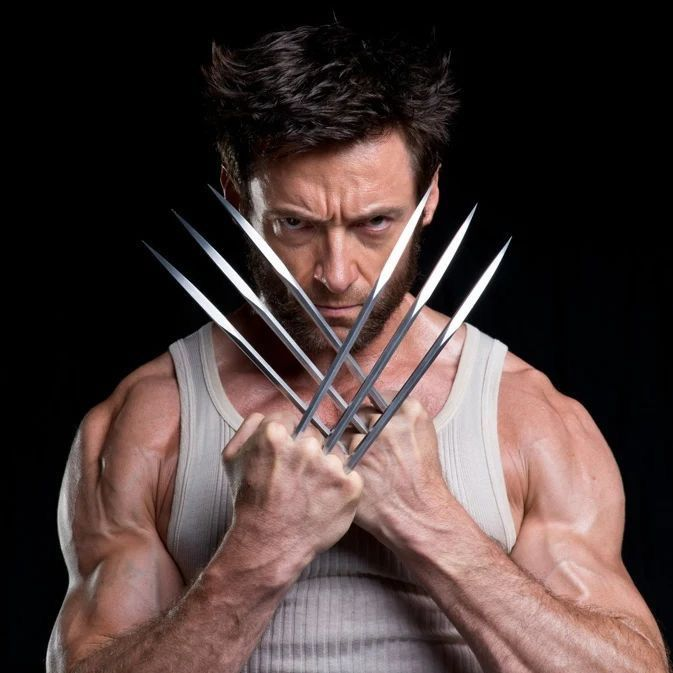
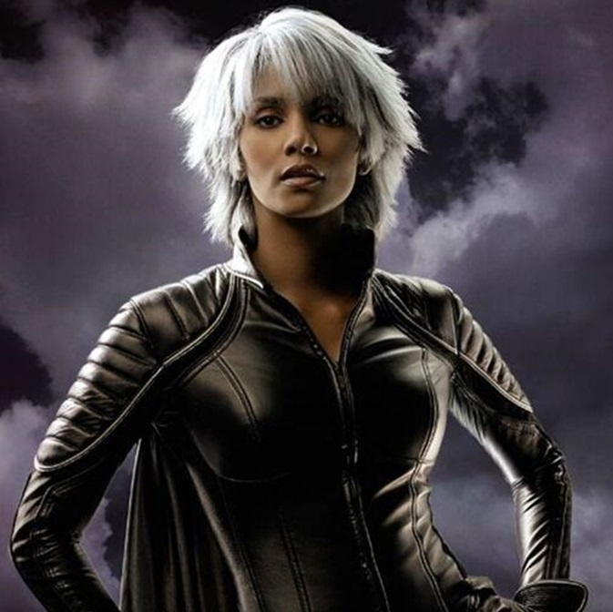
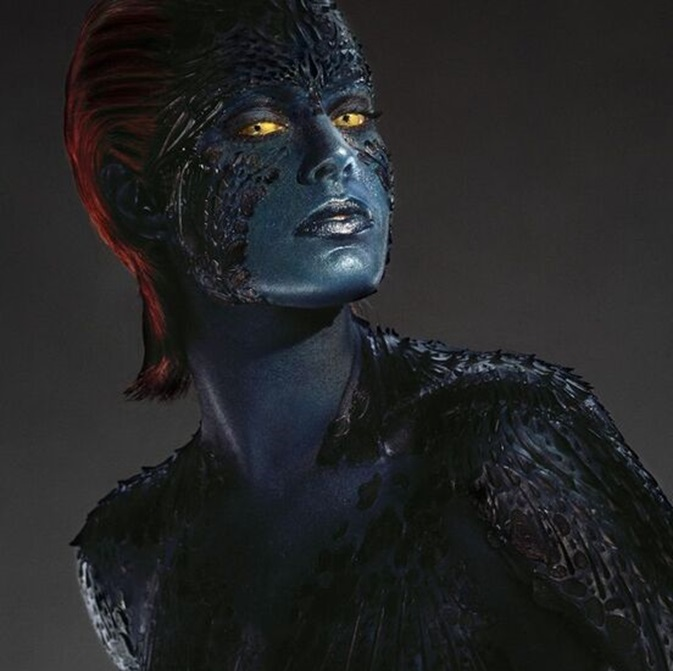

-
Wolverine
Descrição
Wolverine é um personagem complexo com uma personalidade marcada por seu comportamento solitário, temperamento explosivo e um forte senso de justiça. Ele é um anti-herói resiliente, muitas vezes lutando com seu passado traumático e suas tendências violentas. Apesar de sua aparência dura, ele possui uma profunda lealdade aos amigos e um código moral rígido. O Wolverine é capaz de se curar rapidamente, possui olfato, audição e visão aprimorados, força sobre-humana, garras retráteis e ossos revestidos de adamantium (metal indestrutível).
-
Professor Xavier
Descrição
Professor Xavier é conhecido por sua sabedoria, pacifismo e liderança. Ele acredita na coexistência pacífica entre humanos e mutantes e dedica sua vida a promover a aceitação e a igualdade. Sua personalidade é marcada por um profundo senso de empatia, compaixão e um compromisso inabalável com seus ideais. Ele é capaz de ler mentes, comunicar-se telepaticamente e influenciar ou controlar os pensamentos dos outros.
-
Jean Grey

Descrição
Jean Grey é conhecida por sua compaixão, inteligência e força de caráter. Ela é uma figura central e emocionalmente resiliente dentro da equipe dos X-Men, frequentemente servindo como uma fonte de apoio e equilíbrio para seus colegas. Ela possui a capacidade de ler mentes, comunicar-se telepaticamente e influenciar pensamentos. Também é capaz de mover, manipular e controlar objetos com a mente. E não podemos esquecer da força fênix, que a torna imortal e capaz de manipular máteria e energia em escala universal.
-
Tempestade
Descrição
Tempestade é conhecida por sua nobreza, coragem e liderança natural. Ela possui um forte senso de justiça e empatia, frequentemente agindo como uma mentora e figura materna para os membros mais jovens dos X-Men. Ela é capaz de controlar e alterar o clima em uma escala global ou local, incluindo a criação de tempestades, relâmpagos, ventos, chuva e neve. Possui grande resistência ao clima, capaz de sobreviver em condições ambientais severas, e através das correntes do ar ela também consegue voar.
-
Magneto
Descrição
Sobrevivente do Holocausto, ele possui uma visão sombria da humanidade e acredita que os mutantes são superiores. Magneto é determinado, carismático e profundamente comprometido com a proteção de sua espécie, mesmo que isso signifique recorrer a métodos extremos. Ele é capaz de gerar e controlar campos magnéticos, permitindo-lhe manipular metais, criar barreiras magnéticas e voar.
-
Mística
Descrição
Mística é conhecida por sua astúcia, habilidade para manipulação e natureza implacável. Ela é uma estrategista brilhante, disposta a fazer qualquer coisa para alcançar seus objetivos. Sua moralidade é ambígua, e ela frequentemente age por interesse próprio, embora também demonstre lealdade aos mutantes que ela considera sua família. Ela é capaz de mudar sua aparência para se parecer com qualquer pessoa, incluindo voz e impressões digitais. Ela também possui a capacidade de curar rapidamente de ferimentos.